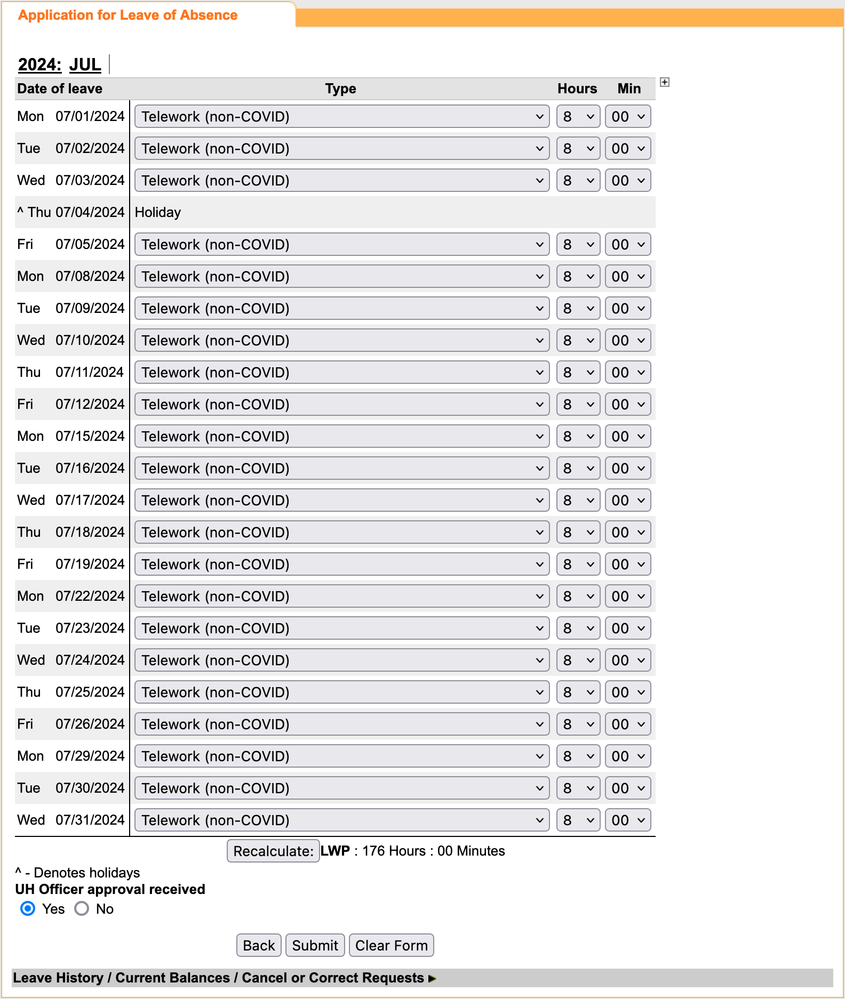

STEP 1: Select your teleworking days.
STEP 2: Drag the following link to the toolbar on your browser and save it as a bookmark.
Fill in telework daysSTEP 3: Follow the OHR instruction to create your telework request on the leave system. When you reach the screen below, use the bookmark created. It will automatically adjust the type and the hours based on your teleworking days.
STEP 4: Verify and submit the form.